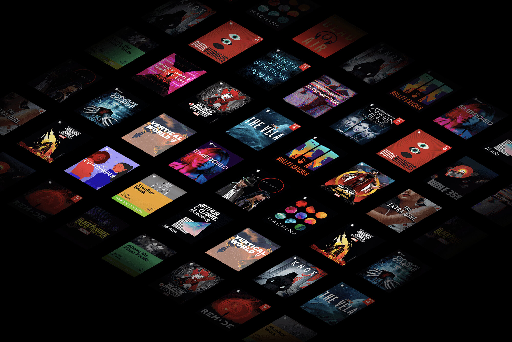

Case Study
Physical books are so 2008
We cultivated a deeply engaged audience around Serial Box, doubling the brand social following, growing affinity, strengthening talent relationships, and whisking fans away from reality. We went viral in our first month on the project.